数字图像处理笔记
1. 数字图像处理概述
图像处理的应用
- 货车安全状态自动识别系统
DIP阶段划分：
数字图像处理在各个领域的应用
- 伽马射线成像：核医学，天文观测…
- X射线成像：医学诊断，工业成像…
- 紫外波段成像：平板印刷术，显微方法，工业检测…
- 可见光及红外波段成像：遥感，天气观测与预报，生产产品的自动视觉检测
- 微波波段成像(雷达)，无线电波段成像(医学，天文学)
数字图像处理关键步骤：
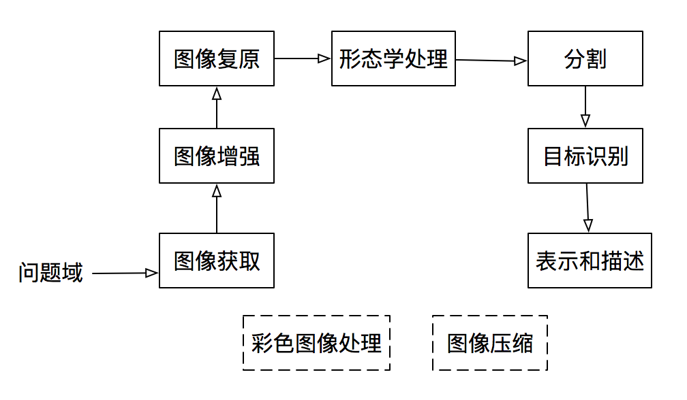- 图像获取：通常包括图像预处理，如图像缩放。
- 图像增强：对一幅图像进行某种操作，使其结果在特定应用中比原始图像更适合进行处理。(主观的)
- 图像复原：复原技术倾向于以图像退化的图数学或概率模型为基础。(客观的)
- 形态学处理：涉及提取图像成分的工具，这些成分在表示和描述形状方面很有用。(输出图像属性处理)
- 分割：将一幅图片划分为其组成部分或目标。分割越准确，识别越成功。
- 表示与描述：选择一种合适的表示，如关注外部形状特征&一条边界，内部特效&整个区域。描述又称为特征选择，涉及特征提取。
- 目标识别：基于目标的描述给该目标赋予标志的过程。
2. 数字图像基础
2.1 采样和量化
为了产生一幅数字图像，我们需要将连续的感知数据转换为数字形式。采集到的图像都需要经过离散化变成数字图像后才能被计算机识别和处理。
数字图像始终只是现实世界场景的近似值。
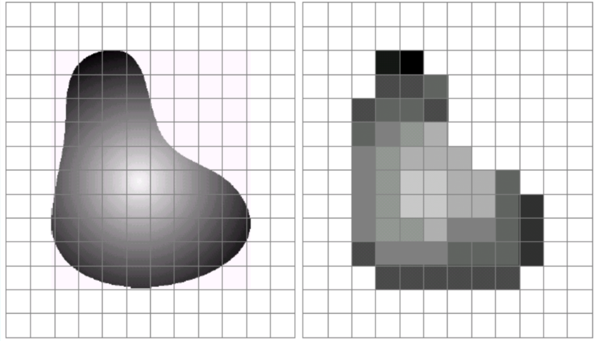采样：对坐标值进行数字化。
量化：对幅值数字化。(把采样点上对应的灰度连续变化区间转换为单个特定数码的过程)
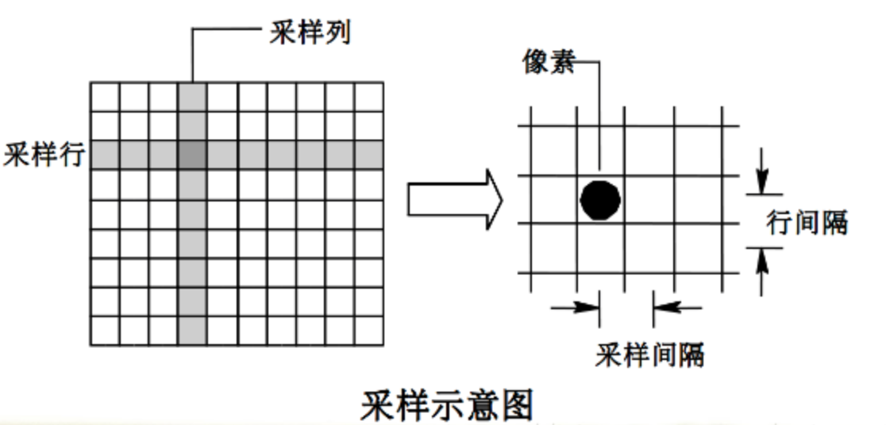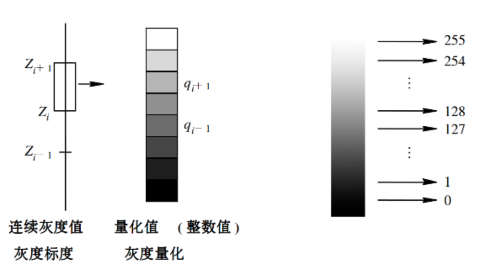
2.2 空间分辨率和灰度分辨率
- 空间分辨率是图像中可辨识的最小细节的度量。(像素大小，每英寸点数DPI)
- 灰度分辨率是指在灰度级中可分辨的最小变化。
- 灰度分辨率指的是用于量化灰度的比特数。
- 灰度分辨率越高，图中可辨识的细节程度越精细。(低细节，中细节，高细节)
3. 灰度变化与空间滤波
3.1 基本概念
图像增强：对一幅图像进行某种操作，使其结果在特定应用中比原始图像更适合进行处理。
图像增强的原因：
- 突出显示图像中的有趣细节
- 消除图像中的噪点
- 使图像更具视觉吸引力
图像增强的方法：
- 点处理
- 直方图处理
- 算数/逻辑运算
- 邻域操作
到目前为止，当我们谈到图像灰度值时，说它们在[0, 255]范围内。其中0为黑色，255为白色，这个范围源于显示技术。而对于本章的许多图像处理操作，假设**灰度级在[0.0, 1.0]**范围。
空间域和频率域
- 空间域指图像平面本身，这类图像处理方法直接操作图像中的元素，主要分为灰度变换和空间滤波两类。灰度变换对图片的单个像素进行操作，主要以对比度和阈值处理为目的。空间滤波设计改善性能的操作，如通过图片中每个像素的邻域处理来锐化图像。
- 频率域的图像处理，如傅立叶变换、小波变换的操作
3.2 点处理
灰度变换是所有图像处理技术中最简单的技术。r和s分别代表处理前后的像素值
s = T( r ) T是把像素值r映射到像素值s的一种变换。
负像操作/图像反转
- 适用于增强嵌入图像暗色区域中的白色或灰色细节，特别是当黑色面积占主导地位时。
- s = L - 1 - r，灰度级范围[0, L-1]
阈值处理(二值化) P64图3.2
- 阈值转换：将感兴趣的对象与背景隔离的分割。
对数变换
- s = c log ( 1 + r )，c为常数，r ≥ 0
- 使用对数变换来扩展图像中的暗像素值，同时压缩更高灰度级的值。该变换将输入中范围较窄的低灰度值映射为输出中范围较宽的灰度值，或将输入中范围较宽的高灰度值映射为输出中范围较窄的灰度值。
- 应用：傅立叶频谱 P66
幂律(伽马)变换
- s = r γ，c和γ为正常数
- 与对数变换情况类似，部分γ值的幂律曲线将较窄范围的暗色输入映射为较宽范围的输出值，或将较宽范围的高灰度级输入映射为较窄范围的输出值。不同的是，γ>1的值所生成的曲线(图像变暗)和 γ<1的值所生成的曲线(图像变亮)效果完全相反，当c = γ = 1，为恒等变换。
- 伽马校正：显示设备不能线性响应不同的亮度，所以需要将图像输入到显示设备前进行预处理，使得经过伽马校正过的输入产生外观上接近原图像的输出。
分段线性变换函数
灰度级分层：突出显示图像中特定灰度范围的亮度。一种方法是将感兴趣范围内所有灰度值显示为一个值(eg白)，其他灰度值显示为另一个值(eg黑)；另一种方法是将感兴趣范围的灰度变亮(/暗)，保持图像中其他灰度级不变。
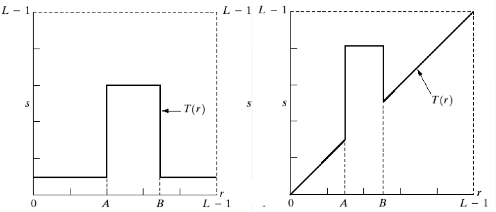比特平面分层：像素是由比特组成的数字。如在256级灰度图像中，每个像素的灰度由8比特组成。替代突出灰度级范围，我们可用突出比特来突出整个图像的外观。
比如一幅8比特图像由8个1比特平面组成，其中平面1包含图像中所有像素的低阶比特，而8包含图像中所有像素的最高阶比特。P71
3.3 直方图处理
灰度范围为[0, L-1]的数字图像的直方图是离散函数 h ( r k ) = n k，其中 r k是第k级灰度值， n k是图像中灰度为 r k的像素个数。
- 归一化：p ( r k ) = n k / MN， M和N为图像的行数和列数，p ( r k )为r k在图像中出现的概率估计。
直方图的主要性质：
- 直方图只能反应图像的灰度分布情况，不能表示灰度所在位置。
- 一幅图像对应唯一的灰度直方图，不同图像可对应相同的直方图。
图像与其直方图之间的关系 P73：高对比度图像具有最均匀间隔的直方图。若一幅图像的像素占有全部可能灰度级范围并且分布均匀，则这幅图像对比度高，灰度色调多变。
直方图均衡化 P76
- 统计图象中各灰度级像素个数n k
- 计算直方图中应变量的值: p k = n k/(M×N)
- 计算累计直方图中应变量的值: s k = Σ p k
- 取整S k=int{(L-1)s k};
- 确定映射对应关系: k → S k;
- 对图象进行增强变换( k → S k).
3.4 算数/逻辑运算
算术运算：加法，减法，乘法
逻辑运算：NOT，AND，OR，XOR
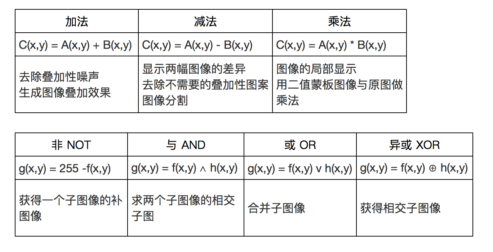
3.5 空间滤波
空间滤波器由(1)邻域(通常是一个较小的矩形)，(2)对该邻域所包围的图像像素执行的预定义操作组成。
- 线性操作 - 线性空间滤波器 eg.平滑空间滤波器
- 非线性操作 - 非线性空间滤波器 eg.中值滤波器
- 线性操作 - 线性空间滤波器 eg.平滑空间滤波器
简单的邻域操作：
- Min：将像素值设置为最小值
- Max：将像素值设置为最大值
- Median：将像素值设置为中值(中位数)。有时候中值比平均值效果更好。
对原始图像中的每个像素重复上述操作以生成滤波图像。
3.6 平滑空间滤波器
用于模糊处理和降低噪声。模糊处理经常用于预处理任务中，例如在目标提取之前去除图像中一些琐碎细节。
平滑线性空间滤波器/均值滤波器：使用滤波器模版确定的邻域内像素的平均灰度值来代替图像中的每个像素的值。
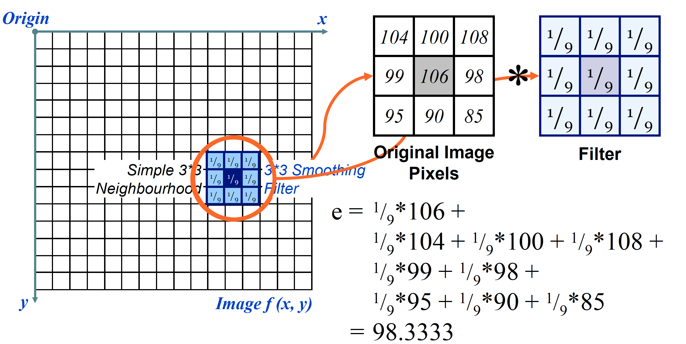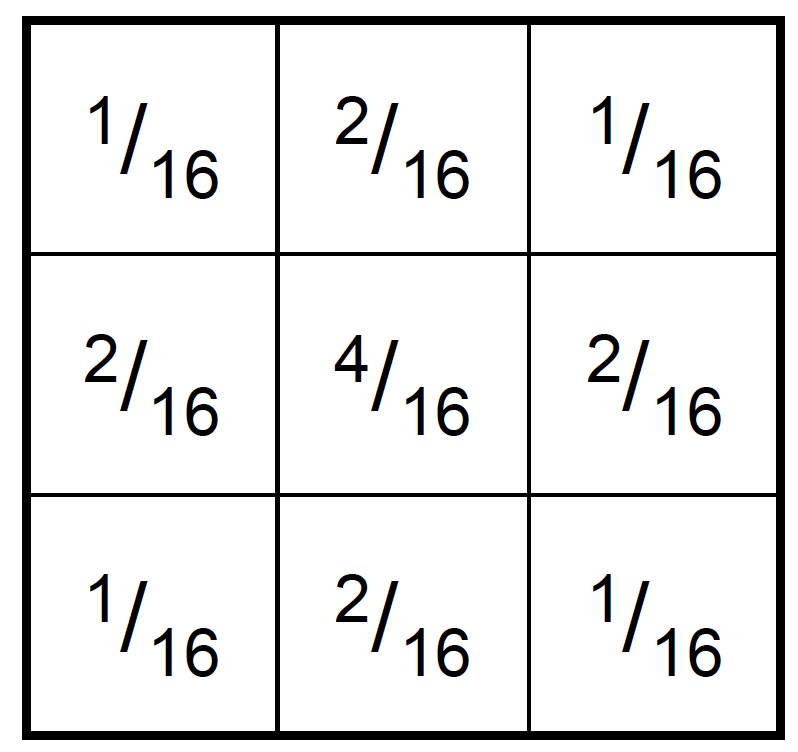
- 加权平滑滤波器：通过允许平均函数中邻域中的不同像素具有不同的权重，可以生成更有效的平滑滤波器。更接近中心像素的像素更重要，通常称为加权平均。
3.7 中值滤波器 - 统计排序(非线性)滤波器
- 统计排序(非线性)滤波器以滤波器包围的图像区域中所包含的像素排序为基础，使用统计排序结果决定的值代替中心像素的值。
- 中值滤波器：对处理脉冲噪声非常有效，这种噪声也称为椒盐噪声，因为这种噪声以黑白点的形式叠加在图像上。
3.8 邻域的边界问题
在图像的边缘，我们缺少像素以形成邻域
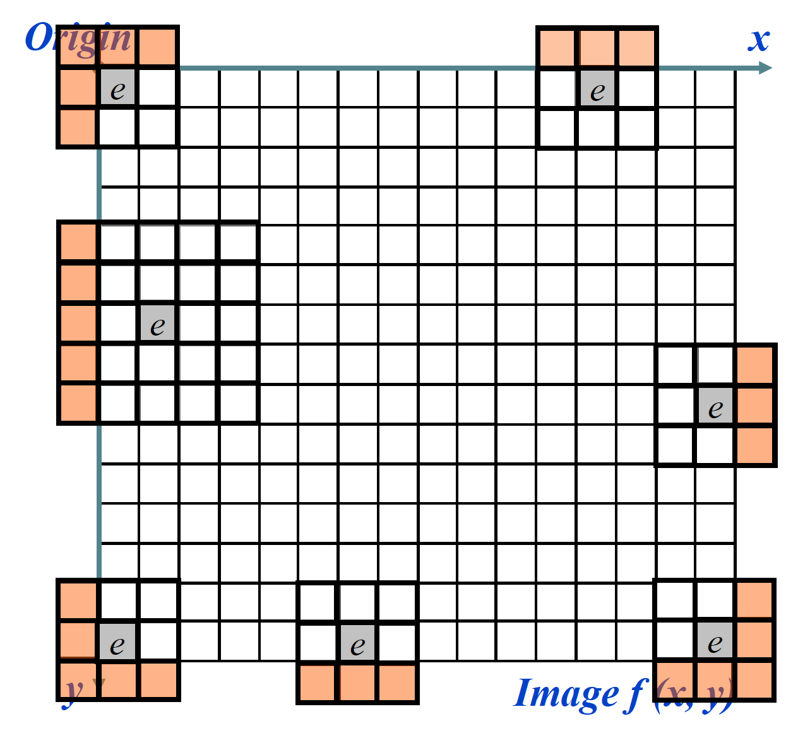处理方法：
- 忽略丢失的像素：仅适用于某些滤波器，可以添加额外代码并减缓处理速度
- 填充图像：通常使用全白或者全黑像素
- 复制边框像素
- 允许像素环绕图像
3.9 锐化空间滤波器 - 拉普拉斯算子
锐化处理的主要目的是突出灰度的过渡部分。锐化处理可由空间微分来实现。
- 从图像中消除模糊
- 高亮显示边缘
基于一阶微分和二阶微分的锐化滤波器
使用二阶微分锐化图像 - 拉普拉斯算子 P100
- 各向同性滤波器：这种滤波器的响应与滤波器作用的图像的突变方向无关。
通常，为了达到令人满意的结果，对给定的任务需要应用多种互补的图像增强技术。 例子P104 增强骨骼扫描
4. 频率域滤波
4.1 傅里叶级数和傅里叶变换
傅里叶级数：任何周期函数都可以表示为不同频率的正弦和或余弦之和的形式，每个正弦项和/或余弦项都乘以不同的系数 - 傅立叶级数
逆DFT：值得注意的是傅立叶变换是完全可逆的。
二维图像的DFT可以通过显示图像分量频率的频谱来可视化。 P155
- 谱对图像平移不敏感，它随着旋转图像以相同的角度旋转
4.2 频域中的图像处理
频率域滤波是指先修改一幅图像的傅里叶变换，然后计算其反变换，得到处理后的结果。
- 计算 F(u, v)，即图像的DFT
- 用滤波函数H(u, v) 乘以F(u, v)
- 计算结果的逆DFT

4.3 图像平滑
平滑频域滤波器：通过丢弃高频分量在频域中实现平滑。
过滤的基本模型是：
- G(u, v) = H(u, v) F(u, v)
- 其中F(u, v)是被滤波图像的傅里叶变换，H(u, v)是滤波器变换函数
低通滤波器：仅通过低频，衰减高频滤波。
- 理想低通滤波器(ILPF)：非常急剧
- 布特沃斯低通滤波器(BLPF)：阶数值较高，接近于ILPF；阶数值较低，接近于GLPF。可以视为两种”极端”滤波器的过渡。
- 高斯低通滤波器(GLPF)：非常平滑
理想低通滤波器(ILPF) P169 [存在振铃现象]
- 在以原点为中心，以D0为半径的圆内，无衰减地通过所有频率，而在该圆外”阻断”所有频率的二位低通滤波器。
- 对于一个理想低通滤波器横截面，在H(u, v) = 1 和 H(u,v) = 0 之间的过渡点称为截止频率。
- D0越小，处理后的结果越模糊。D(u, v)是距频率矩形中心的距离。
布特沃斯低通滤波器(BLPF)[振铃现象与阶数有关]
- 与ILPGF不同，BLPF函数并没有在通过频率和滤除频率之间给出明显截止的急剧不连续性。对于具有平滑传递函数的滤波器，可在这样一点上定义截止频率：即使得H(u, v) 下降为其最大值的某个百分比的点。
- 空间域的一阶布特沃斯低通滤波器没有振铃现象，二阶中振铃现象很难被察觉，但更高阶数的滤波器中的振铃现象会很明显。
高斯低通滤波器(GLPF)[无振铃现象]
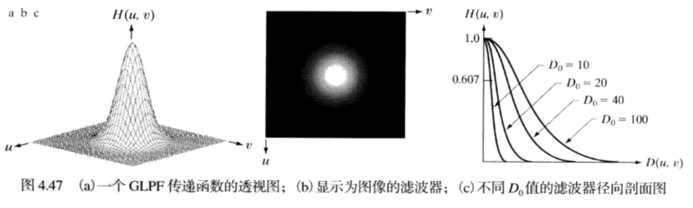应用：
- 低分辨率文本：使用GLPF对图像滤波后的结果，断开的字符段已被连接到一起。
- 用不同D0的高斯滤波器处理照片。
4.4 图像锐化
图像中的边缘和精细细节与高频分量相关联
高通滤波器：仅通过高频，降低低频滤波。高通滤波器是从给定低通滤波器得到：Hhp(u, v) = 1 - Hlp(u ,v)
- 理想高通滤波器(IHPF)：非常急剧
- 布特沃斯高通滤波器(BHPF)：表现为理想滤波器的锐利性和高斯滤波器的宽阔平滑性间的一种过渡。
- 高斯高通滤波器(GHPF)：非常平滑
应用：使用高通滤波法和阈值法增强图像 - 指纹图像P179
频率域的拉普拉斯算子
- 使用拉普拉斯算子在频率域锐化图像 P180
4.5 快速傅里叶变换
- 允许傅里叶变换在合理时间内执行
- 将执行傅里叶变换所需的时间缩短100到600倍
- 可以在空间域和频率域中完成类似的工作
- 可以更容易理解空间域中的过滤
- 在频率域中过滤可以更快——特别是对于大图像
5. 图像复原
5.1 图像复原定义
定义
- 图像复原技术的主要目的是以预先确定的目标来改善图像。
- 类似于图像增强，但更客观。
- 图像复原是图利用退化现象的某种先验知识(或后验的)来复原被退化的图像。
- 面向退化模型，采用相反的过程进行处理。
图像退化：图像在形成、记录、处理和传输过程中，由于成像系统、记录设备、传输介质和处理方法的不完善，导致图像质量的下降的现象。
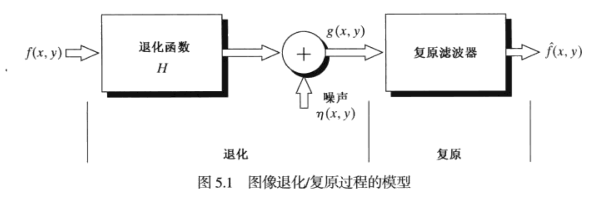
5.2 噪声与噪声模型
数字图像中，噪声主要来源于图像的获取和/或传输过程。
- 成像传感器的性能受各种因素的影响，如图像获取过程中环境条件和传感元件自身的重量。
- 图像在传输中被污染主要是由于传输信道的干扰。
将噪声模型建模为：g(x, y) = f(x, y) + η(x, y)
其中 f(x, y)是原始图像像素，η(x, y)是噪声项，g(x, y)是得到的噪声像素。
图像噪声项η(x, y)有许多不同的模型： P201 噪声效果
- 高斯噪声：最常见的模型
- 瑞利噪声
- 爱尔兰(伽马)噪声
- 指数噪声
- 均匀噪声
- 脉冲(椒盐)噪音
5.3 只存在噪声的复原 —— 空间滤波
在仅存在加性噪声的情况下，可以选择空间滤波方法。
均值滤波器：
- 算数均值滤波器：作为简单的平滑滤波器实现的，模糊图像以消除噪音。
- 几何均值滤波器：实现与算术平均值类似的平滑，但这种处理丢失的图像细节更少。
- 谐波均值滤波器：对于盐粒噪声效果较好，但不适用于胡椒噪声。善于处理像高斯噪声那样的其他噪声。
- 逆谐波均值滤波器P204：Q为滤波器的阶数。这种滤波器适合减少或在实际中消除椒盐噪声的影响。当Q为正，消除胡椒噪声；Q为负，消除盐粒噪声；Q=0，为算数均值滤波器；Q=-1，为谐波均值滤波器。
统计排序滤波器：
- 中值滤波器：引起的模糊更小。在存在椒盐噪声的情况下，中值滤波器尤其有效。
- 最大值和最小值滤波器：最大值滤波器发现最亮点，有利于降低胡椒噪音(值低)；最小值滤波器发现最暗点，有利于降低胡椒噪音(值高)。
- 中点滤波器：最大值和最小值中间的点。适用于处理随机分布的噪声，如高斯噪声或均匀噪声。
- 修正的阿尔法均值滤波器P206：d=0，退化为算数均值滤波器；d=mn-1，退化为中值滤波器；d为其他值，在包括多种噪声的情况下很有用，如混合有高斯噪声和椒盐噪声的情况。
自适应中值滤波器
自适应滤波器：到目前为止讨论的用于图像处理的滤波器，并未考虑图像中的一点对其他点的特征变化。
- 自适应滤波器的行为根据滤波器区域内的图像的特性而改变。
自适应中值滤波器
- 可以处理具有更大概率的脉冲噪声，传统中值滤波器只要脉冲噪声的空间密度不大，性能就会很好。
- 平滑非脉冲噪声时会试图保留细节，这是传统中值滤波器做不到的。
- 在进行滤波处理时，会根据图像的特征而改变。
考虑如下符号：自适应滤波器也工作在矩形窗口区域 S xy内。
- Z min = S xy 中的最小灰度值
- Z max = S xy中的最大灰度值
- Z med = S xy中灰度值的中值
- Z xy = 坐标(x, y)处的灰度值
- S max = S xy允许的最大尺寸
自适应中值滤波器算法以两个进程工作，分别表示为进场A和进程B
进程A：
- A 1 = Z med - Z min
- A 2 = Z med - Z max
- 如果 A 1 > 0 且 A 2 < 0，则转到进程B
- 否则增大窗口尺寸
- 如果窗口尺寸≤ S max，则重复进程A
- 否则输出Z med
进程B
- B 1 = Z xy - Z min
- B 2 = Z xy - Z max
- 如过 B 1 > 0 且 B 2 < 0 ，则输出Z xy
- 否则输出Z med
该算法的三个主要目的：
- 去除椒盐噪声
- 平滑其他非脉冲噪声
- 减少诸如物体边界细化或粗化等失真
5.4 用频率域滤波消除周期噪声
周期噪声[空间相关噪声]：在图像获取期间由于电力或者机电干扰产生的。周期噪声可以通过频率域滤波中来显著地减少(傅里叶变换)。
带阻滤波器：从图像中去除周期性噪声涉及从该图像中去除特定范围的频率
图像恢复比增强更客观
空间域技术对于消除随机噪声特别有用
频域技术对于消除周期性噪声特别有用
6. 形态学图像处理
- 形态学图像处理描述了一系列处理图像中特征形状(或形态)的图像处理技术。
- 形态学，是图像处理中应用最为广泛的技术之一，主要用于从图像中提取对表达和描绘区域形状有意义的图像分量，使后续的识别工作能够抓住目标对象最为本质〈最具区分能力）的形状特征，如边界和连通区域等。同时像细化、像素化和修剪毛刺等技术也常应用于图像的预处理和后处理中，成为图像增强技术的有力补充。
6.1 基础知识
- 结构元：设有两幅图像A，S。若A是被处理的对象， 而S是用来处理A的， 则称S为结构元。结构元通常都是一些比较小的图像， A与S的关系类似于滤波中图像和模板的关系。
- 结构元可以是任何尺寸， 形状。
- 为简单起见，我们使用矩形构造结构元，其原点位于中间像素。
- 适合：结构元的所有像素都覆盖图像中的像素。
- 击中：结构元的任意一个像素域与图像中的像素重叠。
6.2 基本形态学操作
腐蚀
结构元 s 对图像 f 的腐蚀定义为： f ㊀ s 。结构元的原点位于(x, y)，新的像素值由以下规则确定：
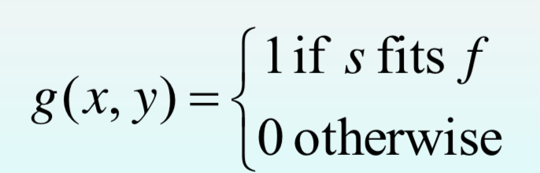缩小或者细化了二值图像中的物体。
可以分裂连接的物体
膨胀
- 结构元 s 对图像 f 的膨胀定义为： f ⊕ s 。结构元的原点位于(x, y)，新的像素值由以下规则确定：
- 会增长或粗化二值图像中的物体
- 可以连接裂缝
6.3 复合操作
开：先腐蚀后膨胀 f 〇 s = (f ㊀ s) ⊕ s
- 平滑物体的轮廓
- 断开较窄的连接，消除较细的突出物
闭：先膨胀后腐蚀 f • s = ( f ⊕ s) ㊀ s
- 使轮廓变得光滑
- 弥合较窄的间断和细长的沟壑
- 消除(填充)较小的孔洞，填补轮廓线中的断裂
6.4 形态学算法 P412
边界提取：提取对象的边界(或轮廓)非常有用。
- β(A) = A – (A㊀B)
孔洞填充
- Xk =( Xk-1⊕ B ) ∩Ac
连通分量的提取
凸壳，细化，粗化，骨架，剪裁
7. 图像分割
- 本章的多数分割算法均基于灰度值的两个基本性质之一：
- 不连续性
- 相似性
7.1 点、线和边缘检测
点检测(孤立点)
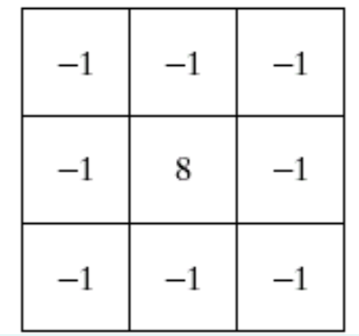线检测
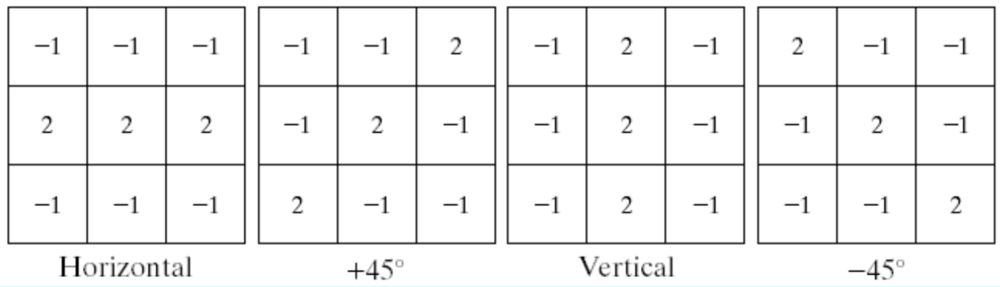边缘检测
- 通常，在边缘检测中出现问题，因为存在太多细节，这种精致的细节在边缘检测中通常是不符合需要的。克服这个问题的一种方法是在边缘检测之前进行平滑处理。
- 拉普拉斯边缘检测：拉普拉斯算子通常不会单独使用，因为它对噪声过于敏感。通常用于边缘检测的拉普拉斯算子与平滑高斯滤波器相结合
- 拉普拉斯高斯滤波器：使用高斯去除噪声，使用拉普拉斯算子进行边缘检测。
7.2 阈值
基本的全局阈值处理 P478
- 基于图像的直方图。
- 当物体和背景的灰度分布十分明显，可以用适用于整个图像的单个阈值。
- 在大多数应用中，通常图像之间有较大变化，即使使用全局阈值，对每一幅图像有能力自动估计阈值的算法是必要的。
用Otsu方法的最佳全局阈值处理
- 假定图像包含两类像素（前景像素和背景像素），直方图为双峰直方图，然后计算使得两类像素能分开的最佳阈值（类内方差），或等价的间类间方差最大。
- 按图像的灰度特性,将图像分成背景和目标两部分，或者说，是寻找一个阈值为K，将图像的颜色分为1,2…..K和K+1…..256两部分。
- 自适应的。
8. 表示& 描述
边界可用特征对其进行描述：
- 长度
- 连接端点的直线的方向
- 边界上凹陷的数量
形状特征 - 外部表示
内部属性，如颜色，纹理 - 内部表示
8.1 表示
- 分割技术会获得原始数据，其形式是沿着边界或包含在区域中的像素。标准做法是使用某种方案将分割后的数据精简为便于描绘子计算的表示，以减小数据的大小。
1. 链码
链码被用来以顺次连接的具有指定长度和方向的直线段来表示边界。
这种表示基于4连接或者8连接。
原链码：沿着顺时针方向追踪一个边界，并对连接酶对像素的线段赋予一个方向的方法产生。
- 得到的链码往往太长
- 噪声或不完美分割沿边界引起的任何较小干扰都会导致编码的变化
- 解决方案：选取一个较大的网格间距来对边界重取样，编码表示的京都取决于取样网格的间距。
归一化链码：原链码具有平移不变性（平移时不改变指向符），但当改变起点S时，会得到不同的链码表示，即不具备唯一性。为此可引入归一化链码，其方法是：
- 对于闭合边界，任选一起点S得到原链码，将链码看作由各方向数构成的n位自然数，将该码按一个方向循环，使其构成的n位自然数最小，此时就形成起点唯一的链码，称为归一化链码，也称为规格化链码。
- 使用链码的一次差分而非链码本身，来对旋转进行归一化。这个差分时通过计算链码分隔两个相邻像素的方向变化的数得到的。
2. 多边形近似
使用最小周长多边形的多边形近似
- 将目标边界勘城市一个橡皮筋，将组成边界的像素序列内外边各堪称一堵墙，边界处于内外墙之间，如果将向脾经收缩，则可得到目标的最小周长多边形。
聚合技术：
- 沿一条边界来聚合一些点，直到拟合这些聚合点的直线的最小均方差超过某个预设的阈值。当这种条件出现时，存储该直线的参数，将误差设为0，并且重复该过程，沿边界聚合新的点，直到误差再次超过预设的阈值。过程结束后，相邻线段的交点就构成多边形的顶点。
- 难点：得到的近似顶点不总是对应于原始边界的形变。
分裂技术
- 将线段不断地细分为两部分，直到满足规定的准则。
3. 标记图
将边界表示简化为描述起来可能比原始二维边界更简单的一维函数。
- 距离为角度的函数
4. 骨架
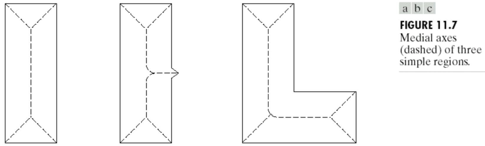迭代删除一个区域边界点的细化算法：
- 不能删除端点
- 不能破坏连续性
- 不能导致区域的过度腐蚀
细化算法步骤 P526-527 (稍微偷了个懒，然后它就考到了？？？ )